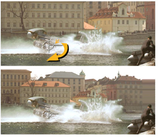

到 规模 一个元素是通过添加 (上采样) 或删除 (下采样) 像素来调整它的大小。

Nuke 为缩放元素提供了几个节点。变换主要用于在复合材料中向上或向下缩放背景板。变换的缩放函数如下所述。
Reformat 设计用于写出具有特定分辨率和像素长宽比的元素。 添加运动模糊 描述此节点的使用。
| 1。 | 单击 变换 > 变换 在脚本中的适当位置插入变换节点。 |
| 2. | 将查看器连接到转换节点的输出，以便您可以看到更改的效果。 |
| 3. | 在 “变换属性” 面板中，从 过滤器 下拉菜单 (请参见 选择过滤算法 )。 |
| 4. | 根据需要定位枢轴点: |
• 增加或减少 中心 x 和 y 在任一方向上移动轴的字段。
• 或按 Ctrl ( Cmd 在 Mac 上) 拖动变换覆盖的中心。
| 5. | 要均匀缩放帧 (在 x 和 y 上): |
• 增加或减少变换节点的 规模 字段。
• 或拖动变换覆盖的圆部分。
| 6. | 要不对称缩放帧 (在 x 或 y 上): |
• 单击 规模 参数的通道选择器 为了揭示 x 和 y 字段，然后分别递增或递减。
• 或拖动变换覆盖的圆部分上的四个点中的任何一个。顶部和底部点在 y 上缩放; 左侧和右侧点在 x 上。
|
|